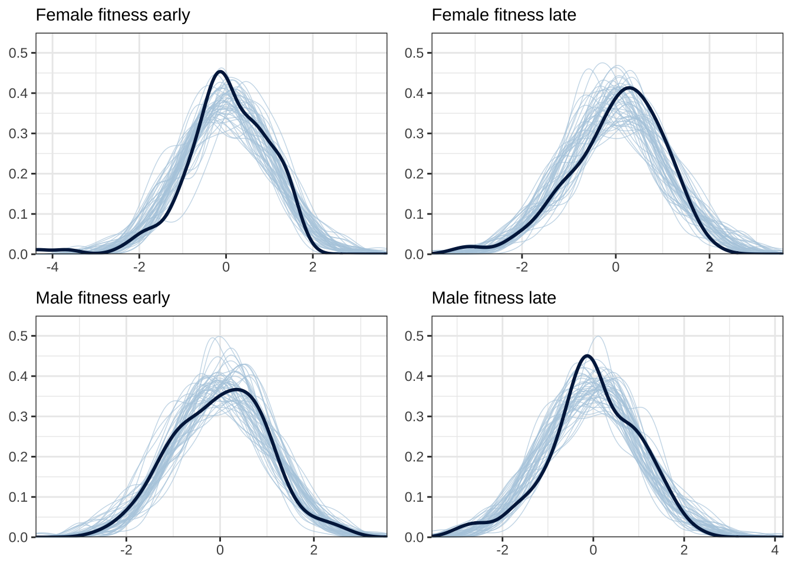
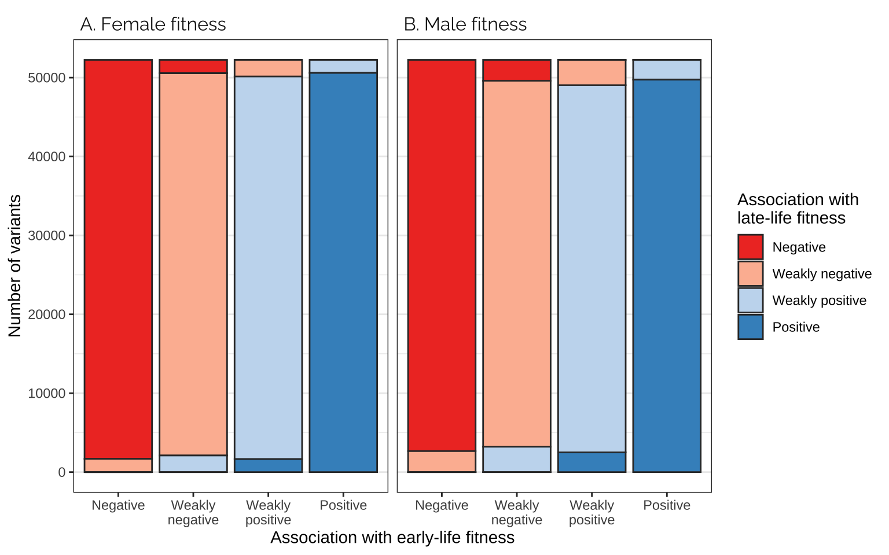

Plots and models of variant effect sizes
Last updated: 2022-02-23
Checks: 7 0
Knit directory: fitnessGWAS/
This reproducible R Markdown analysis was created with workflowr (version 1.7.0). The Checks tab describes the reproducibility checks that were applied when the results were created. The Past versions tab lists the development history.
Great! Since the R Markdown file has been committed to the Git repository, you know the exact version of the code that produced these results.
Great job! The global environment was empty. Objects defined in the global environment can affect the analysis in your R Markdown file in unknown ways. For reproduciblity it’s best to always run the code in an empty environment.
The command set.seed(20180914) was run prior to running the code in the R Markdown file. Setting a seed ensures that any results that rely on randomness, e.g. subsampling or permutations, are reproducible.
Great job! Recording the operating system, R version, and package versions is critical for reproducibility.
Nice! There were no cached chunks for this analysis, so you can be confident that you successfully produced the results during this run.
Great job! Using relative paths to the files within your workflowr project makes it easier to run your code on other machines.
Great! You are using Git for version control. Tracking code development and connecting the code version to the results is critical for reproducibility.
The results in this page were generated with repository version d573064. See the Past versions tab to see a history of the changes made to the R Markdown and HTML files.
Note that you need to be careful to ensure that all relevant files for the analysis have been committed to Git prior to generating the results (you can use wflow_publish or wflow_git_commit). workflowr only checks the R Markdown file, but you know if there are other scripts or data files that it depends on. Below is the status of the Git repository when the results were generated:
Ignored files:
Ignored: .DS_Store
Ignored: .Rapp.history
Ignored: .Rhistory
Ignored: .Rproj.user/
Ignored: .httr-oauth
Ignored: .pversion
Ignored: analysis/.DS_Store
Ignored: analysis/correlations_SNP_effects_cache/
Ignored: code/.DS_Store
Ignored: code/Drosophila_GWAS.Rmd
Ignored: data/.DS_Store
Ignored: data/derived/
Ignored: data/input/.DS_Store
Ignored: data/input/.pversion
Ignored: data/input/dgrp.fb557.annot.txt
Ignored: data/input/dgrp2.bed
Ignored: data/input/dgrp2.bim
Ignored: data/input/dgrp2.fam
Ignored: data/input/huang_transcriptome/
Ignored: figures/.DS_Store
Untracked files:
Untracked: big_model.rds
Untracked: code/quant_gen_1.R
Untracked: data/input/genomic_relatedness_matrix.rds
Unstaged changes:
Modified: .gitignore
Modified: figures/fig2_SNPs_manhattan_plot.png
Note that any generated files, e.g. HTML, png, CSS, etc., are not included in this status report because it is ok for generated content to have uncommitted changes.
These are the previous versions of the repository in which changes were made to the R Markdown (analysis/plot_models_variant_effects.Rmd) and HTML (docs/plot_models_variant_effects.html) files. If you’ve configured a remote Git repository (see ?wflow_git_remote), click on the hyperlinks in the table below to view the files as they were in that past version.
| File | Version | Author | Date | Message |
|---|---|---|---|---|
| Rmd | d573064 | lukeholman | 2022-02-23 | wflow_publish(“analysis/plot_models_variant_effects.Rmd”) |
| html | 6521063 | lukeholman | 2022-02-22 | Build site. |
| Rmd | 9deec2d | lukeholman | 2022-02-22 | wflow_publish(“analysis/plot_models_variant_effects.Rmd”) |
| html | 5a59d9f | lukeholman | 2021-11-12 | Build site. |
| Rmd | de68149 | lukeholman | 2021-11-12 | wflow_publish(“analysis/plot_models_variant_effects.Rmd”) |
| html | 7449a90 | lukeholman | 2021-10-01 | Build site. |
| html | 4953d58 | lukeholman | 2021-09-26 | Build site. |
| Rmd | 2bf8750 | lukeholman | 2021-09-26 | Commit Sept 2021 |
| html | 8d14298 | lukeholman | 2021-09-26 | Build site. |
| Rmd | af15dd6 | lukeholman | 2021-09-26 | Commit Sept 2021 |
| html | 871ae81 | lukeholman | 2021-03-04 | Build site. |
| html | e112260 | lukeholman | 2021-03-04 | Build site. |
| Rmd | c606d3d | lukeholman | 2021-03-04 | big first commit 2021 |
library(tidyverse)
library(gridExtra)
library(qqman)
library(ggbeeswarm)
library(Hmisc)
library(showtext) # For fancy Google font in figures
library(mashr)
library(kableExtra)
library(cowplot)
library(grid)
library(RColorBrewer)
font_add_google(name = "Raleway", family = "Raleway", regular.wt = 400, bold.wt = 700) # Install font from Google Fonts
showtext_auto()
db <- DBI::dbConnect(RSQLite::SQLite(),
"data/derived/annotations.sqlite3")
# Results for all 1,613,615 SNPs, even those that are in 100% LD with others (these are grouped up by the SNP_clump column)
all_snps <- tbl(db, "univariate_lmm_results")
# All SNPs and SNP groups that are in <100% LD with one another (n = 1,207,357)
SNP_clumps <- all_snps %>% select(-SNP) %>% distinct() %>% collect(n = Inf)
# Subsetting variable to get the approx-LD subset of SNPs
LD_subset <- !is.na(SNP_clumps$LFSR_female_early_mashr_ED)Load and clean the variant effect sizes
Modify column names, reorder columns, filter based on the p-value, etc.
# Univariate analysis, mashr-adjusted, data-driven approach
univariate_lmm_results <- tbl(db, "univariate_lmm_results") %>%
select(-contains("canonical"),
-contains("raw")) %>%
inner_join(tbl(db, "variants") %>%
select(SNP, FBID, site.class, distance.to.gene, MAF),
by = "SNP") %>%
left_join(
tbl(db, "genes") %>%
select(FBID, gene_name), by = "FBID") %>%
collect(n = Inf) %>%
rename_all(~ gsub("beta_", "", .x)) %>%
rename_all(~ gsub("_mashr_ED", "", .x))
univariate_lmm_results <- univariate_lmm_results %>%
mutate(site.class = gsub("5_", "5-", site.class),
site.class = gsub("3_", "3-", site.class),
site.class = gsub("NON_", "NON-", site.class),
site.class = gsub("_", " ", site.class),
site.class = capitalize(tolower(site.class)),
site.class = gsub("Utr", "UTR", site.class)
)Q-Q plots
Here are some quantile-quantile plots, which are commonly used to check GWAS results, and to test the hypothesis that there are more SNPs than expected showing large effects on the trait of interest. There is an excess of loci with effects on female fitness, but not much of a visible excess for males. These plots use the raw \(p\)-values results from GEMMA.
Female early-life fitness
univariate_lmm_pvals <- SNP_clumps %>%
select(contains("pvalue")) %>% filter(LD_subset) %>% as.data.frame()
qqman::qq(univariate_lmm_pvals$pvalue_female_early_raw)
| Version | Author | Date |
|---|---|---|
| 8d14298 | lukeholman | 2021-09-26 |
Female late-life fitness
qqman::qq(univariate_lmm_pvals$pvalue_female_late_raw)
| Version | Author | Date |
|---|---|---|
| 8d14298 | lukeholman | 2021-09-26 |
Male early-life fitness
qqman::qq(univariate_lmm_pvals$pvalue_male_early_raw)
| Version | Author | Date |
|---|---|---|
| 8d14298 | lukeholman | 2021-09-26 |
Male late-life fitness
qqman::qq(univariate_lmm_pvals$pvalue_male_late_raw)
| Version | Author | Date |
|---|---|---|
| 8d14298 | lukeholman | 2021-09-26 |
Hex bin plots and correlations in variant effect sizes
Effect sizes adjusted using ‘data-driven’ adaptive shrinkage in mashr
Plot
hex_plot <- function(x, y, xlab, ylab, title,
xlim = c(-0.5, 0.5),
ylim = c(-0.3, 0.3)
){
dat <- SNP_clumps %>%
mutate(facet = title) %>%
filter(LD_subset) # ensure only the LD SNPs from mashr are plotted
ggplot(dat, aes_string(x, y)) +
geom_abline(linetype = 2) +
geom_vline(xintercept = 0, linetype = 3) +
geom_hline(yintercept = 0, linetype = 3) +
stat_binhex(bins = 50) +
geom_density_2d(colour = "white", alpha = 0.6) +
scale_fill_viridis_c() +
coord_cartesian(xlim = xlim, ylim = ylim) +
facet_wrap(~ facet) +
theme_bw() + xlab(xlab) + ylab(ylab) +
theme(legend.position = "none",
strip.background = element_blank(),
strip.text = element_text(hjust=0)) +
theme(text = element_text(family = "Raleway", size = 12))
}
p1 <- hex_plot("beta_female_early_mashr_ED",
"beta_male_early_mashr_ED",
"Effect on female fitness",
NULL,
"A. Early life fitness")
p2 <- hex_plot("beta_female_late_mashr_ED",
"beta_male_late_mashr_ED",
"Effect on female fitness",
NULL,
"B. Late life fitness")
grid.arrange(p1, p2, ncol = 2, left = "Effect on male fitness")
Figure 2: Effect sizes of 1207357 loci (i.e. groups of one or more polymorphic sites in complete linkage disequilibrium) on male and female fitness, plotted separately for the early-life and late-life estimates. The effect sizes estimated using GEMMA have been corrected using mashr, using the data-driven method to apply shrinkage (Figure SX shows the raw estimates). The data have been binned into hexagons, with the colour and contour lines indicating the number of loci. The diagonal line represents \(y=x\). Positive effect sizes indicate that the minor allele is associated with higher fitness.

| Version | Author | Date |
|---|---|---|
| 5a59d9f | lukeholman | 2021-11-12 |
Pearson correlation
SNP_clumps %>%
select(contains("mashr_ED")) %>%
select(contains("beta")) %>%
rename_all(~ paste(ifelse(str_detect(.x, "female"), "Female", "Male"),
ifelse(str_detect(.x, "early"), "early", "late"))) %>%
cor(use = "pairwise.complete.obs") %>%
kable(digits = 3) %>% kable_styling(full_width = FALSE)| Female early | Female late | Male early | Male late | |
|---|---|---|---|---|
| Female early | 1.000 | 0.998 | 0.911 | 0.950 |
| Female late | 0.998 | 1.000 | 0.880 | 0.927 |
| Male early | 0.911 | 0.880 | 1.000 | 0.994 |
| Male late | 0.950 | 0.927 | 0.994 | 1.000 |
Unadjusted effect sizes
Plot
Uses the variant effect sizes output by GEMMA, without applying any shrinkage (i.e. this is the data that was adjusted using mashr).
p1 <- hex_plot("beta_female_early_raw",
"beta_male_early_raw",
"Effect on female fitness",
NULL,
"A. Early life fitness",
xlim = c(-1, 1),
ylim = c(-1, 1))
p2 <- hex_plot("beta_female_late_raw",
"beta_male_late_raw",
"Effect on female fitness",
NULL,
"B. Late life fitness",
xlim = c(-1, 1),
ylim = c(-1, 1))
grid.arrange(p1, p2, ncol = 2, left = "Effect on male fitness")
Pearson correlation
SNP_clumps %>%
select(contains("raw")) %>%
select(contains("beta")) %>%
rename_all(~ paste(ifelse(str_detect(.x, "female"), "Female", "Male"),
ifelse(str_detect(.x, "early"), "early", "late"))) %>%
cor(use = "pairwise.complete.obs") %>%
kable(digits = 3) %>% kable_styling(full_width = FALSE)| Female early | Female late | Male early | Male late | |
|---|---|---|---|---|
| Female early | 1.000 | 0.567 | 0.220 | 0.118 |
| Female late | 0.567 | 1.000 | 0.215 | 0.167 |
| Male early | 0.220 | 0.215 | 1.000 | 0.434 |
| Male late | 0.118 | 0.167 | 0.434 | 1.000 |
Average effect sizes are negative
Each of the following four tests is an intercept-only linear model, weighted by the inverse of the standard error for the focal variant’s effect size (so, loci where the effect effect size was measured with more precision are weighted more heavily). The tests are run on the LD-pruned subset of SNPs, minimising pseudoreplication. A non-zero intercept term indicates that major (or minor) alleles tend to have consistently positive or negative associations with the focal fitness trait.
These results indicate that the minor allele tends to reduce fitness, relative to the major allele. It’s a weak effect (note the small value in the Estimate column), this may reflect the large uncertainty with which the effect sizes are measured, in addition to a true biological result that most loci have little or no relationship with the fitness traits we measured.
Female early-life
summary(lm(beta_female_early_raw ~ 1,
data = SNP_clumps %>% filter(LD_subset),
weights = 1 / SE_female_early_raw))
Call:
lm(formula = beta_female_early_raw ~ 1, data = SNP_clumps %>%
filter(LD_subset), weights = 1/SE_female_early_raw)
Weighted Residuals:
Min 1Q Median 3Q Max
-1.98458 -0.22630 0.00919 0.23696 1.48781
Coefficients:
Estimate Std. Error t value Pr(>|t|)
(Intercept) -0.0016820 0.0002555 -6.584 4.58e-11 ***
---
Signif. codes: 0 '***' 0.001 '**' 0.01 '*' 0.05 '.' 0.1 ' ' 1
Residual standard error: 0.3497 on 208986 degrees of freedomFemale late-life
summary(lm(beta_female_late_raw ~ 1,
data = SNP_clumps %>% filter(LD_subset),
weights = 1 / SE_female_late_raw))
Call:
lm(formula = beta_female_late_raw ~ 1, data = SNP_clumps %>%
filter(LD_subset), weights = 1/SE_female_late_raw)
Weighted Residuals:
Min 1Q Median 3Q Max
-1.94128 -0.23405 0.00409 0.23909 1.47335
Coefficients:
Estimate Std. Error t value Pr(>|t|)
(Intercept) -0.0025016 0.0002598 -9.63 <2e-16 ***
---
Signif. codes: 0 '***' 0.001 '**' 0.01 '*' 0.05 '.' 0.1 ' ' 1
Residual standard error: 0.3549 on 208986 degrees of freedomMale early-life
summary(lm(beta_male_early_raw ~ 1,
data = SNP_clumps %>% filter(LD_subset),
weights = 1 / SE_male_early_raw))
Call:
lm(formula = beta_male_early_raw ~ 1, data = SNP_clumps %>% filter(LD_subset),
weights = 1/SE_male_early_raw)
Weighted Residuals:
Min 1Q Median 3Q Max
-1.58868 -0.23295 -0.00219 0.23114 1.76956
Coefficients:
Estimate Std. Error t value Pr(>|t|)
(Intercept) -0.0016140 0.0002542 -6.35 2.15e-10 ***
---
Signif. codes: 0 '***' 0.001 '**' 0.01 '*' 0.05 '.' 0.1 ' ' 1
Residual standard error: 0.3503 on 208986 degrees of freedomMale late-life
summary(lm(beta_male_late_raw ~ 1,
data = SNP_clumps %>% filter(LD_subset),
weights = 1 / SE_male_late_raw))
Call:
lm(formula = beta_male_late_raw ~ 1, data = SNP_clumps %>% filter(LD_subset),
weights = 1/SE_male_late_raw)
Weighted Residuals:
Min 1Q Median 3Q Max
-1.89125 -0.22874 0.00114 0.23182 1.59205
Coefficients:
Estimate Std. Error t value Pr(>|t|)
(Intercept) -0.001943 0.000251 -7.739 1e-14 ***
---
Signif. codes: 0 '***' 0.001 '**' 0.01 '*' 0.05 '.' 0.1 ' ' 1
Residual standard error: 0.3479 on 208986 degrees of freedomManhattan plot
Figure legend: Manhattan plot showing the p-values (-log_{10} transformed) for each variant, from mixed model GWAS of female (top) and male (bottom) early-life fitness testing the null hypothesis that the two alleles are associated with equal fitness values.
manhattan_data <- tbl(db, "univariate_lmm_results") %>%
select(SNP, starts_with("P_"),
pvalue_female_early_raw, pvalue_male_early_raw) %>%
distinct() %>%
collect(n=Inf) %>%
mutate(position = str_split(SNP, "_"),
chr = map_chr(position, ~ .x[1]),
position = as.numeric(map_chr(position, ~ .x[2]))) %>%
# P_pleiotropy = 1 - P_null - P_female_specific - P_male_specific,
# SA_not_concord = P_sex_antag > P_equal_effects,
# top_SA = P_sex_antag >= quantile(P_sex_antag, probs=0.9999)) %>%
filter(chr != "4")
max_pos <- manhattan_data %>%
group_by(chr) %>%
summarise(max_pos = max(position), .groups = "drop") %>%
as.data.frame()
max_pos$max_pos <- c(0, cumsum(max_pos$max_pos[1:4]))
manhattan_data <- manhattan_data %>%
left_join(max_pos, by = "chr") %>%
mutate(position = position + max_pos)
p1 <- manhattan_data %>%
ggplot(aes(position, -1 * log10(pvalue_female_early_raw), group = chr, colour = chr, stroke = 0.2)) +
geom_point(size = 0.5) +
# geom_point(data = manhattan_data %>% filter(top_SA),
# aes(y = 8), size = 3, pch = 6) +
scale_colour_brewer(palette = "Paired", name = "Chromosome") +
scale_y_continuous(limits = c(0,8)) +
ylab(expression(paste("Effect on female early-life fitness (-", Log[10], " p)"))) +
xlab("") +
theme_bw() +
theme(axis.text.x = element_blank(),
# text = element_text(family = "Raleway", size = 12),
panel.border = element_blank(),
axis.ticks.x = element_blank())
p2 <- manhattan_data %>%
ggplot(aes(position, -1 * log10(pvalue_male_early_raw), group = chr, colour = chr, stroke = 0.2)) +
geom_point(size = 0.5) +
scale_colour_brewer(palette = "Paired", name = "Chromosome") +
ylab(expression(paste("Effect on male early-life fitness (-", Log[10], " p)"))) +
xlab("Position") +
scale_y_reverse(limits = c(8,0)) +
theme_bw() +
theme(axis.text.x = element_blank(),
# text = element_text(family = "Raleway", size = 12),
panel.border = element_blank(),
axis.ticks.x = element_blank())
grid_arrange_shared_legend <- function(..., ncol = length(list(...)), nrow = 1) {
plots <- list(...)
# position <- match.arg(position)
g <- ggplotGrob(plots[[1]] + theme(legend.position = "right"))$grobs
legend <- g[[which(sapply(g, function(x) x$name) == "guide-box")]]
lheight <- sum(legend$height)
lwidth <- sum(legend$width)
gl <- lapply(plots, function(x) x + theme(legend.position="none"))
gl <- c(gl, ncol = ncol, nrow = nrow)
combined <- arrangeGrob(arrangeGrob(gl[[1]], gl[[2]], nrow = 2),
legend,
ncol = 2,
widths = unit.c(unit(1, "npc") - lwidth, lwidth))
grid.newpage()
grid.draw(combined)
invisible(combined) # return gtable invisibly
}
grid_arrange_shared_legend(p1, p2)
| Version | Author | Date |
|---|---|---|
| 6521063 | lukeholman | 2022-02-22 |
Investigating pleiotropy and polygenicity of fitness
Inspired by Boyle et al. 2017 (Cell, specifically the analysis in their Figure 1C), we sorted all the variants in order of effect size on female fitness, placed the variants in bins of 1000, and then calculated the average effect size for each bin for both male and female fitness. This analysis was performed on the raw SNP effect sizes from GEMMA, pruned to a set of SNPs in approximate LD with one another.
If there is pleiotropy between male and female fitness, we would predict a correlation between the effect sizes for male and female fitness; on the contrary if there were no pleiotropy, we would see no correlation.
Moreover, if fitness is highly polygenic (‘omnigenic’; Boyle et al. 2017), we predict a tight, straight line relationship, because each bin would contain some variants with small but genuine associations with fitness, and these effects would replicate in the other fitness trait. On the contrary if genetic variance in fitness stems from just a few genes with larger effects, the relationship between male and female fitness would be flat in the center and sloped at the extremes.
Figure 4 shows that there was a very tight correlation between the average effects of the variants in each bin on male and female fitness. The data therefore suggest that variants associated with male fitness tend to also affect female fitness (in the same direction), and that a very large number of loci have small, concordant effects on fitness in both sexes.
Interestingly there appears to be a curve in Figure 4A to the left of the x-axis, indicating that variants where the minor allele is strongly, negatively associated with female fitness are (on average) less negatively associated with male fitness than expected based on predictions from variants with weaker effects on female fitness. One possible explanation is that alleles that are highly highly detrimental to both sexes are usually purged by selection (or at least kept below the 5% MAF threshold that we used), whereas female-harming alleles that are neutral or beneficial in males are purged less often, resulting a greater proportion of female-limited or sexually antagonistic alleles towards the left of the x-axis.
p1 <- SNP_clumps %>%
filter(LD_subset) %>% # The figure looks the same whether or not the data are thinned to the LD set of SNPs
arrange(beta_female_early_raw) %>%
mutate(bin = c(rep(1:floor(n()/1000), each = 1000),
rep(floor(n()/1000) + 1, each = n() %% 1000)),
age = "A. Early life") %>%
group_by(bin, age) %>%
summarise(females = mean(beta_female_early_raw), males = mean(beta_male_early_raw)) %>%
ggplot(aes(females, males)) +
geom_hline(yintercept = 0, linetype = 2) +
geom_vline(xintercept = 0, linetype = 2) +
geom_point() +
stat_smooth(method = "lm", formula = y ~ x + I(x^2), size = 0.6) +
facet_wrap(~ age) +
scale_y_continuous(limits = c(-0.1, 0.2)) +
xlab(NULL) + ylab(NULL) +
theme_bw() +
theme(strip.background = element_blank(),
strip.text = element_text(hjust=0)) +
theme(text = element_text(family = "Raleway", size = 12))
p2 <- SNP_clumps %>%
filter(LD_subset) %>%
arrange(beta_female_late_raw) %>%
mutate(bin = c(rep(1:floor(n()/1000), each = 1000),
rep(floor(n()/1000) + 1, each = n() %% 1000)),
age = "B. Late life") %>%
group_by(bin, age) %>%
summarise(females = mean(beta_female_late_raw), males = mean(beta_male_late_raw)) %>%
ggplot(aes(females, males)) +
geom_hline(yintercept = 0, linetype = 2) +
geom_vline(xintercept = 0, linetype = 2) +
geom_point() +
stat_smooth(method = "lm", formula = y ~ x + I(x^2), size = 0.6) +
facet_wrap(~ age) +
scale_y_continuous(limits = c(-0.1, 0.2)) +
xlab(NULL) + ylab(NULL) +
theme_bw() +
theme(strip.background = element_blank(),
strip.text = element_text(hjust=0)) +
theme(text = element_text(family = "Raleway", size = 12))
grid.arrange(p1, p2, nrow = 1, bottom = "Mean effect size on female fitness",
left = "Mean effect size on male fitness")
quartz_off_screen
2 Frequencies of antagonistic loci and transcripts
The following figures show the proportions of loci/transcripts whose effect on female fitness (or early-life fitness) is similar or different to their effect on male fitness (or late-life fitness). The figures were made by first placing variant or transcript effect sizes (for female or early-life fitness) into quartiles, which we label as negative effects, weak negative effects, weak positive effects, and positive effects (taking advantage of the fact that the median effect size is very close to zero). We then do the same for male or late-life fitness, and plot the number of transcripts showing each combination of quartiles, giving an indication of how many loci/transcripts have aligned or opposing effects on the different fitness metrics.
The following plots were made after processing the effect sizes with mashr, which should reduce the number of false signals. Because there is a positive correlation between the sexes and age classes, the shrinkage applied by mashr reduces the number of loci/transcripts that appear to show antagonism between ages and sexes (this should control the number of ‘false positive’ antagonistic loci/transcripts).
Frequencies of antagonistic loci
Comparing effects on the sexes
Rather few loci are in the 1st quartile in their effect on male fitness and the 4th quartile for their effect on female fitness, or vice versa, suggesting that variants with strongly sex-opposite effects on fitness are rare
Figure
SNP_effects <- SNP_clumps %>%
filter(LD_subset) %>%
select(contains("beta")) %>%
select(contains("ED")) # this can be changed to "raw" to see the non-mashr effect sizes (i.e. statistical noise)
names(SNP_effects)[grepl("female_early", names(SNP_effects))] <- "FE"
names(SNP_effects)[grepl("female_late", names(SNP_effects))] <- "FL"
names(SNP_effects)[grepl("male_early", names(SNP_effects))] <- "ME"
names(SNP_effects)[grepl("male_late", names(SNP_effects))] <- "ML"
temp <- SNP_effects %>%
mutate(quartile_FE = ntile(FE, 4),
quartile_ME = ntile(ME, 4),
quartile_FL = ntile(FL, 4),
quartile_ML = ntile(ML, 4)) %>%
mutate_at(vars(starts_with("quartile")), ~ {
SNP_effects <- .x
SNP_effects[SNP_effects == 1] <- "Negative"
SNP_effects[SNP_effects == 2] <- "Weakly\nnegative"
SNP_effects[SNP_effects == 3] <- "Weakly\npositive"
SNP_effects[SNP_effects == 4] <- "Positive"
factor(SNP_effects, c("Negative", "Weakly\nnegative", "Weakly\npositive", "Positive"))})
mat_list <- list(table(temp$quartile_FE, temp$quartile_ME),
table(temp$quartile_FL, temp$quartile_ML),
table(temp$quartile_FE, temp$quartile_FL),
table(temp$quartile_ME, temp$quartile_ML)) %>%
map(~ as.data.frame(.x))
names(mat_list) <- c("FE, ME", "FL, ML", "FE, FL", "ME, ML")
# var1 is rows (first one, e.g. FE), 2 is cols (second one, e.g. ME)
cols <- c(brewer.pal(9, "Reds")[c(6,3)], brewer.pal(9, "Blues")[c(3,6)])
focal_dat <- rbind(
as.data.frame(mat_list[[1]]) %>%
mutate(pp = "A. Early-life fitness"),
as.data.frame(mat_list[[2]]) %>%
mutate(pp = "B. Late-life fitness"))
fig_4_top_row <- focal_dat %>%
ggplot(aes(Var1, Freq, fill = Var2)) +
facet_wrap(~ pp) +
geom_bar(stat="identity", colour = "grey20") +
scale_fill_manual(values = cols, name = "Association with\nmale fitness") +
xlab("Association with female fitness") +
ylab("Number of variants") +
theme_bw() +
theme(panel.grid.major.x = element_blank(),
strip.background = element_blank(),
#strip.text = element_text(hjust = 0, family = "Raleway", size = 12))
strip.text = element_text(hjust = 0, size = 12))
# To count the total number of transcripts tested:
# focal_dat$Freq[focal_dat$pp == "C. Early-life fitness"] %>% sum()
fig_4_top_row
| Version | Author | Date |
|---|---|---|
| 6521063 | lukeholman | 2022-02-22 |
Table
focal_dat %>%
split(.$pp) %>%
map_df(~ .x %>% mutate(`Percentage (overall)` = round(100 * Freq / sum(Freq), 2))) %>%
split(paste((.$Var1), .$pp)) %>%
map_df(~ .x %>% mutate(`Percentage (given effect on females)` = round(100 * Freq / sum(Freq), 2))) %>%
arrange(pp, Var1, Var2) %>%
select(pp, everything()) %>%
rename(`Age class` = pp, `Association with female fitness` = Var1,
`Association with male fitness` = Var2,
`Number of variants` = Freq) %>%
kable() %>% kable_styling(full_width = FALSE)| Age class | Association with female fitness | Association with male fitness | Number of variants | Percentage (overall) | Percentage (given effect on females) |
|---|---|---|---|---|---|
| A. Early-life fitness | Negative | Negative | 41947 | 20.07 | 80.29 |
| A. Early-life fitness | Negative | Weakly negative | 9075 | 4.34 | 17.37 |
| A. Early-life fitness | Negative | Weakly positive | 1096 | 0.52 | 2.10 |
| A. Early-life fitness | Negative | Positive | 129 | 0.06 | 0.25 |
| A. Early-life fitness | Weakly negative | Negative | 9459 | 4.53 | 18.10 |
| A. Early-life fitness | Weakly negative | Weakly negative | 31336 | 14.99 | 59.98 |
| A. Early-life fitness | Weakly negative | Weakly positive | 10546 | 5.05 | 20.18 |
| A. Early-life fitness | Weakly negative | Positive | 906 | 0.43 | 1.73 |
| A. Early-life fitness | Weakly positive | Negative | 738 | 0.35 | 1.41 |
| A. Early-life fitness | Weakly positive | Weakly negative | 10950 | 5.24 | 20.96 |
| A. Early-life fitness | Weakly positive | Weakly positive | 31731 | 15.18 | 60.73 |
| A. Early-life fitness | Weakly positive | Positive | 8828 | 4.22 | 16.90 |
| A. Early-life fitness | Positive | Negative | 103 | 0.05 | 0.20 |
| A. Early-life fitness | Positive | Weakly negative | 886 | 0.42 | 1.70 |
| A. Early-life fitness | Positive | Weakly positive | 8874 | 4.25 | 16.99 |
| A. Early-life fitness | Positive | Positive | 42383 | 20.28 | 81.12 |
| B. Late-life fitness | Negative | Negative | 42917 | 20.54 | 82.14 |
| B. Late-life fitness | Negative | Weakly negative | 8492 | 4.06 | 16.25 |
| B. Late-life fitness | Negative | Weakly positive | 745 | 0.36 | 1.43 |
| B. Late-life fitness | Negative | Positive | 93 | 0.04 | 0.18 |
| B. Late-life fitness | Weakly negative | Negative | 8787 | 4.20 | 16.82 |
| B. Late-life fitness | Weakly negative | Weakly negative | 32734 | 15.66 | 62.65 |
| B. Late-life fitness | Weakly negative | Weakly positive | 10158 | 4.86 | 19.44 |
| B. Late-life fitness | Weakly negative | Positive | 568 | 0.27 | 1.09 |
| B. Late-life fitness | Weakly positive | Negative | 495 | 0.24 | 0.95 |
| B. Late-life fitness | Weakly positive | Weakly negative | 10381 | 4.97 | 19.87 |
| B. Late-life fitness | Weakly positive | Weakly positive | 33013 | 15.80 | 63.19 |
| B. Late-life fitness | Weakly positive | Positive | 8358 | 4.00 | 16.00 |
| B. Late-life fitness | Positive | Negative | 48 | 0.02 | 0.09 |
| B. Late-life fitness | Positive | Weakly negative | 640 | 0.31 | 1.22 |
| B. Late-life fitness | Positive | Weakly positive | 8331 | 3.99 | 15.95 |
| B. Late-life fitness | Positive | Positive | 43227 | 20.68 | 82.74 |
Comparing effects on the age classes
Figure
focal_dat <- rbind(
as.data.frame(mat_list[[3]]) %>%
mutate(pp = "A. Female fitness"),
as.data.frame(mat_list[[4]]) %>%
mutate(pp = "B. Male fitness"))
focal_dat %>%
ggplot(aes(Var1, Freq, fill = Var2)) +
facet_wrap(~ pp) +
geom_bar(stat="identity", colour = "grey20") +
scale_fill_manual(values = cols, name = "Association with\nlate-life fitness") +
xlab("Association with early-life fitness") +
ylab("Number of variants") +
theme_bw() +
theme(panel.grid.major.x = element_blank(),
strip.background = element_blank(),
strip.text = element_text(hjust = 0, family = "Raleway", size = 12))
| Version | Author | Date |
|---|---|---|
| 6521063 | lukeholman | 2022-02-22 |
Table
focal_dat %>%
split(.$pp) %>%
map_df(~ .x %>% mutate(`Percentage (overall)` = round(100 * Freq / sum(Freq), 2))) %>%
split(paste((.$Var1), .$pp)) %>%
map_df(~ .x %>% mutate(`Percentage (given effect on females)` = round(100 * Freq / sum(Freq), 2))) %>%
arrange(pp, Var1, Var2) %>%
select(pp, everything()) %>%
rename(`Sex` = pp, `Association with early-life fitness` = Var1,
`Association with late-life fitness` = Var2,
`Number of variants` = Freq) %>%
kable() %>% kable_styling(full_width = FALSE)| Sex | Association with early-life fitness | Association with late-life fitness | Number of variants | Percentage (overall) | Percentage (given effect on females) |
|---|---|---|---|---|---|
| A. Female fitness | Negative | Negative | 50560 | 24.19 | 96.77 |
| A. Female fitness | Negative | Weakly negative | 1687 | 0.81 | 3.23 |
| A. Female fitness | Negative | Weakly positive | 0 | 0.00 | 0.00 |
| A. Female fitness | Negative | Positive | 0 | 0.00 | 0.00 |
| A. Female fitness | Weakly negative | Negative | 1687 | 0.81 | 3.23 |
| A. Female fitness | Weakly negative | Weakly negative | 48453 | 23.18 | 92.74 |
| A. Female fitness | Weakly negative | Weakly positive | 2107 | 1.01 | 4.03 |
| A. Female fitness | Weakly negative | Positive | 0 | 0.00 | 0.00 |
| A. Female fitness | Weakly positive | Negative | 0 | 0.00 | 0.00 |
| A. Female fitness | Weakly positive | Weakly negative | 2107 | 1.01 | 4.03 |
| A. Female fitness | Weakly positive | Weakly positive | 48489 | 23.20 | 92.81 |
| A. Female fitness | Weakly positive | Positive | 1651 | 0.79 | 3.16 |
| A. Female fitness | Positive | Negative | 0 | 0.00 | 0.00 |
| A. Female fitness | Positive | Weakly negative | 0 | 0.00 | 0.00 |
| A. Female fitness | Positive | Weakly positive | 1651 | 0.79 | 3.16 |
| A. Female fitness | Positive | Positive | 50595 | 24.21 | 96.84 |
| B. Male fitness | Negative | Negative | 49584 | 23.73 | 94.90 |
| B. Male fitness | Negative | Weakly negative | 2661 | 1.27 | 5.09 |
| B. Male fitness | Negative | Weakly positive | 1 | 0.00 | 0.00 |
| B. Male fitness | Negative | Positive | 1 | 0.00 | 0.00 |
| B. Male fitness | Weakly negative | Negative | 2657 | 1.27 | 5.09 |
| B. Male fitness | Weakly negative | Weakly negative | 46371 | 22.19 | 88.75 |
| B. Male fitness | Weakly negative | Weakly positive | 3218 | 1.54 | 6.16 |
| B. Male fitness | Weakly negative | Positive | 1 | 0.00 | 0.00 |
| B. Male fitness | Weakly positive | Negative | 6 | 0.00 | 0.01 |
| B. Male fitness | Weakly positive | Weakly negative | 3214 | 1.54 | 6.15 |
| B. Male fitness | Weakly positive | Weakly positive | 46519 | 22.26 | 89.04 |
| B. Male fitness | Weakly positive | Positive | 2508 | 1.20 | 4.80 |
| B. Male fitness | Positive | Negative | 0 | 0.00 | 0.00 |
| B. Male fitness | Positive | Weakly negative | 1 | 0.00 | 0.00 |
| B. Male fitness | Positive | Weakly positive | 2509 | 1.20 | 4.80 |
| B. Male fitness | Positive | Positive | 49736 | 23.80 | 95.20 |
Run a \(\chi^2\) test
The following \(\chi^2\) test examines the null hypothesis that the proportion of candidate sexually antagonistic loci (i.e. those with a quartile 1 effect on fitness of sex \(i\) and a quartile 4 effect on sex \(j\)) is equal when fitness associations are calculated using the early- and late-life fitness data. This null hypothesis is rejected: the % of SA loci is 0.111% at early life and 0.067% at late life, which is a 1.6-fold difference.
chisq_table <- as.table(rbind(c(129+103, 208987 - (129+103)), c(93+48, 208987 - (93+48))))
dimnames(chisq_table) <- list(life_stage = c("Early_life", "Late_life"),
antagonism_status = c("Sex_antag","Non_sex_antag"))
chisq_table antagonism_status
life_stage Sex_antag Non_sex_antag
Early_life 232 208755
Late_life 141 208846chisq.test(chisq_table)
Pearson's Chi-squared test with Yates' continuity correction
data: chisq_table
X-squared = 21.735, df = 1, p-value = 3.13e-06Frequencies of antagonistic transcripts
Comparing effects on the sexes
Figure
TWAS_ED <- readRDS("data/derived/TWAS/TWAS_ED.rds")
binned_transcripts <- data.frame(
FBID = read_csv("data/derived/TWAS/TWAS_results.csv")$FBID,
as.data.frame(get_pm(TWAS_ED))) %>%
as_tibble() %>% rename_all(~ str_remove_all(.x, "beta_")) %>%
mutate(quartile_FE = ntile(FE, 4),
quartile_ME = ntile(ME, 4),
quartile_FL = ntile(FL, 4),
quartile_ML = ntile(ML, 4)) %>%
mutate_at(vars(starts_with("quartile")), ~ {
SNP_effects <- .x
SNP_effects[SNP_effects == 1] <- "Negative"
SNP_effects[SNP_effects == 2] <- "Weakly\nnegative"
SNP_effects[SNP_effects == 3] <- "Weakly\npositive"
SNP_effects[SNP_effects == 4] <- "Positive"
factor(SNP_effects, c("Negative", "Weakly\nnegative", "Weakly\npositive", "Positive"))})
mat_list <- list(table(binned_transcripts$quartile_FE, binned_transcripts$quartile_ME),
table(binned_transcripts$quartile_FL, binned_transcripts$quartile_ML),
table(binned_transcripts$quartile_FE, binned_transcripts$quartile_FL),
table(binned_transcripts$quartile_ME, binned_transcripts$quartile_ML)) %>%
map(~ as.data.frame(.x))
names(mat_list) <- c("FE, ME", "FL, ML", "FE, FL", "ME, ML")
# var1 is rows (first one, e.g. FE), 2 is cols (second one, e.g. ME)
focal_dat <- rbind(
as.data.frame(mat_list[[1]]) %>%
mutate(pp = "C. Early-life fitness"),
as.data.frame(mat_list[[2]]) %>%
mutate(pp = "D. Late-life fitness"))
# To count the total number of transcripts tested, 14286:
# focal_dat$Freq[focal_dat$pp == "C. Early-life fitness"] %>% sum()
fig_4_bottom_row <- focal_dat %>%
ggplot(aes(Var1, Freq, fill = Var2)) +
facet_wrap(~ pp) +
geom_bar(stat="identity", colour = "grey20") +
scale_fill_manual(values = cols, name = "Association with\nmale fitness") +
xlab("Association with female fitness") +
ylab("Number of transcripts") +
theme_bw() +
theme(panel.grid.major.x = element_blank(),
strip.background = element_blank(),
#strip.text = element_text(hjust = 0, family = "Raleway", size = 12))
strip.text = element_text(hjust = 0, size = 12))
fig_4_bottom_row
| Version | Author | Date |
|---|---|---|
| 6521063 | lukeholman | 2022-02-22 |

| Version | Author | Date |
|---|---|---|
| 6521063 | lukeholman | 2022-02-22 |
Table
focal_dat %>%
split(.$pp) %>%
map_df(~ .x %>% mutate(`Percentage (overall)` = round(100 * Freq / sum(Freq), 2))) %>%
split(paste((.$Var1), .$pp)) %>%
map_df(~ .x %>% mutate(`Percentage (given effect on females)` = round(100 * Freq / sum(Freq), 2))) %>%
arrange(pp, Var1, Var2) %>%
select(pp, everything()) %>%
rename(`Age class` = pp, `Association with female fitness` = Var1,
`Association with male fitness` = Var2,
`Number of transcripts` = Freq) %>%
kable() %>% kable_styling(full_width = FALSE)| Age class | Association with female fitness | Association with male fitness | Number of transcripts | Percentage (overall) | Percentage (given effect on females) |
|---|---|---|---|---|---|
| C. Early-life fitness | Negative | Negative | 1578 | 11.05 | 44.18 |
| C. Early-life fitness | Negative | Weakly negative | 752 | 5.26 | 21.05 |
| C. Early-life fitness | Negative | Weakly positive | 551 | 3.86 | 15.43 |
| C. Early-life fitness | Negative | Positive | 691 | 4.84 | 19.34 |
| C. Early-life fitness | Weakly negative | Negative | 773 | 5.41 | 21.64 |
| C. Early-life fitness | Weakly negative | Weakly negative | 1168 | 8.18 | 32.70 |
| C. Early-life fitness | Weakly negative | Weakly positive | 1043 | 7.30 | 29.20 |
| C. Early-life fitness | Weakly negative | Positive | 588 | 4.12 | 16.46 |
| C. Early-life fitness | Weakly positive | Negative | 532 | 3.72 | 14.90 |
| C. Early-life fitness | Weakly positive | Weakly negative | 1058 | 7.41 | 29.63 |
| C. Early-life fitness | Weakly positive | Weakly positive | 1201 | 8.41 | 33.63 |
| C. Early-life fitness | Weakly positive | Positive | 780 | 5.46 | 21.84 |
| C. Early-life fitness | Positive | Negative | 689 | 4.82 | 19.29 |
| C. Early-life fitness | Positive | Weakly negative | 594 | 4.16 | 16.63 |
| C. Early-life fitness | Positive | Weakly positive | 776 | 5.43 | 21.73 |
| C. Early-life fitness | Positive | Positive | 1512 | 10.58 | 42.34 |
| D. Late-life fitness | Negative | Negative | 1603 | 11.22 | 44.88 |
| D. Late-life fitness | Negative | Weakly negative | 758 | 5.31 | 21.22 |
| D. Late-life fitness | Negative | Weakly positive | 534 | 3.74 | 14.95 |
| D. Late-life fitness | Negative | Positive | 677 | 4.74 | 18.95 |
| D. Late-life fitness | Weakly negative | Negative | 765 | 5.35 | 21.42 |
| D. Late-life fitness | Weakly negative | Weakly negative | 1175 | 8.22 | 32.89 |
| D. Late-life fitness | Weakly negative | Weakly positive | 1053 | 7.37 | 29.48 |
| D. Late-life fitness | Weakly negative | Positive | 579 | 4.05 | 16.21 |
| D. Late-life fitness | Weakly positive | Negative | 540 | 3.78 | 15.12 |
| D. Late-life fitness | Weakly positive | Weakly negative | 1061 | 7.43 | 29.71 |
| D. Late-life fitness | Weakly positive | Weakly positive | 1206 | 8.44 | 33.77 |
| D. Late-life fitness | Weakly positive | Positive | 764 | 5.35 | 21.39 |
| D. Late-life fitness | Positive | Negative | 664 | 4.65 | 18.59 |
| D. Late-life fitness | Positive | Weakly negative | 578 | 4.05 | 16.19 |
| D. Late-life fitness | Positive | Weakly positive | 778 | 5.45 | 21.79 |
| D. Late-life fitness | Positive | Positive | 1551 | 10.86 | 43.43 |
Run a \(\chi^2\) test
The following \(\chi^2\) test examines the null hypothesis that the proportion of candidate sexually antagonistic transcripts (i.e. those with a quartile 1 effect on fitness of sex \(i\) and a quartile 4 effect on sex \(j\)) is equal when fitness associations are calculated using the early- and late-life fitness data. This null hypothesis is not rejected: the % of SA transcripts is 9.66% at early life and 9.39% at late life, which is a 1.03-fold difference.
chisq_table <- as.table(rbind(c(691+689, 14286 - (691+689)), c(677 + 664, 14286 - (677 + 664))))
dimnames(chisq_table) <- list(life_stage = c("Early_life", "Late_life"),
antagonism_status = c("Sex_antag","Non_sex_antag"))
chisq_table antagonism_status
life_stage Sex_antag Non_sex_antag
Early_life 1380 12906
Late_life 1341 12945chisq.test(chisq_table)
Pearson's Chi-squared test with Yates' continuity correction
data: chisq_table
X-squared = 0.58655, df = 1, p-value = 0.4438Comparing effects on the age classes
Figure
focal_dat <- rbind(
as.data.frame(mat_list[[3]]) %>%
mutate(pp = "A. Female fitness"),
as.data.frame(mat_list[[4]]) %>%
mutate(pp = "B. Male fitness"))
focal_dat %>%
ggplot(aes(Var1, Freq, fill = Var2)) +
facet_wrap(~ pp) +
geom_bar(stat="identity", colour = "grey20") +
scale_fill_manual(values = cols, name = "Association with\nlate-life fitness") +
xlab("Association with early-life fitness") +
ylab("Number of transcripts") +
theme_bw() +
theme(panel.grid.major.x = element_blank(),
strip.background = element_blank(),
strip.text = element_text(hjust = 0, family = "Raleway", size = 12))
| Version | Author | Date |
|---|---|---|
| 6521063 | lukeholman | 2022-02-22 |
Table
focal_dat %>%
split(.$pp) %>%
map_df(~ .x %>% mutate(`Percentage (overall)` = round(100 * Freq / sum(Freq), 2))) %>%
split(paste((.$Var1), .$pp)) %>%
map_df(~ .x %>% mutate(`Percentage (given effect on females)` = round(100 * Freq / sum(Freq), 2))) %>%
arrange(pp, Var1, Var2) %>%
select(pp, everything()) %>%
rename(`Sex` = pp, `Association with early-life fitness` = Var1,
`Association with late-life fitness` = Var2,
`Number of transcripts` = Freq) %>%
kable() %>% kable_styling(full_width = FALSE)| Sex | Association with early-life fitness | Association with late-life fitness | Number of transcripts | Percentage (overall) | Percentage (given effect on females) |
|---|---|---|---|---|---|
| A. Female fitness | Negative | Negative | 3523 | 24.66 | 98.63 |
| A. Female fitness | Negative | Weakly negative | 49 | 0.34 | 1.37 |
| A. Female fitness | Negative | Weakly positive | 0 | 0.00 | 0.00 |
| A. Female fitness | Negative | Positive | 0 | 0.00 | 0.00 |
| A. Female fitness | Weakly negative | Negative | 49 | 0.34 | 1.37 |
| A. Female fitness | Weakly negative | Weakly negative | 3464 | 24.25 | 96.98 |
| A. Female fitness | Weakly negative | Weakly positive | 59 | 0.41 | 1.65 |
| A. Female fitness | Weakly negative | Positive | 0 | 0.00 | 0.00 |
| A. Female fitness | Weakly positive | Negative | 0 | 0.00 | 0.00 |
| A. Female fitness | Weakly positive | Weakly negative | 59 | 0.41 | 1.65 |
| A. Female fitness | Weakly positive | Weakly positive | 3450 | 24.15 | 96.61 |
| A. Female fitness | Weakly positive | Positive | 62 | 0.43 | 1.74 |
| A. Female fitness | Positive | Negative | 0 | 0.00 | 0.00 |
| A. Female fitness | Positive | Weakly negative | 0 | 0.00 | 0.00 |
| A. Female fitness | Positive | Weakly positive | 62 | 0.43 | 1.74 |
| A. Female fitness | Positive | Positive | 3509 | 24.56 | 98.26 |
| B. Male fitness | Negative | Negative | 3550 | 24.85 | 99.38 |
| B. Male fitness | Negative | Weakly negative | 22 | 0.15 | 0.62 |
| B. Male fitness | Negative | Weakly positive | 0 | 0.00 | 0.00 |
| B. Male fitness | Negative | Positive | 0 | 0.00 | 0.00 |
| B. Male fitness | Weakly negative | Negative | 22 | 0.15 | 0.62 |
| B. Male fitness | Weakly negative | Weakly negative | 3521 | 24.65 | 98.57 |
| B. Male fitness | Weakly negative | Weakly positive | 29 | 0.20 | 0.81 |
| B. Male fitness | Weakly negative | Positive | 0 | 0.00 | 0.00 |
| B. Male fitness | Weakly positive | Negative | 0 | 0.00 | 0.00 |
| B. Male fitness | Weakly positive | Weakly negative | 29 | 0.20 | 0.81 |
| B. Male fitness | Weakly positive | Weakly positive | 3520 | 24.64 | 98.57 |
| B. Male fitness | Weakly positive | Positive | 22 | 0.15 | 0.62 |
| B. Male fitness | Positive | Negative | 0 | 0.00 | 0.00 |
| B. Male fitness | Positive | Weakly negative | 0 | 0.00 | 0.00 |
| B. Male fitness | Positive | Weakly positive | 22 | 0.15 | 0.62 |
| B. Male fitness | Positive | Positive | 3549 | 24.84 | 99.38 |
Plotting and modelling the evidence for antagonism
Calculate the evidence ratios
For the GWAS results
get_antagonism_ratios <- function(dat){
dat %>%
# Convert the LFSR to the probability that effect size is positive
mutate(pp_female_early = ifelse(pheno1 > 0, LFSR1, 1 - LFSR1),
pp_female_late = ifelse(pheno2 > 0, LFSR2, 1 - LFSR2),
pp_male_early = ifelse(pheno3 > 0, LFSR3, 1 - LFSR3),
pp_male_late = ifelse(pheno4 > 0, LFSR4, 1 - LFSR4)) %>%
# Calculate the probabilities that beta_i and beta_j have the same/opposite signs
mutate(p_sex_concord_early = pp_female_early * pp_male_early +
(1 - pp_female_early) * (1 - pp_male_early),
p_sex_antag_early = pp_female_early * (1 - pp_male_early) +
(1 - pp_female_early) * pp_male_early,
p_sex_concord_late = pp_female_late * pp_male_late +
(1 - pp_female_late) * (1 - pp_male_late),
p_sex_antag_late = pp_female_late * (1 - pp_male_late) +
(1 - pp_female_late) * pp_male_late,
p_age_concord_females = pp_female_early * pp_female_late +
(1 - pp_female_early) * (1 - pp_female_late),
p_age_antag_females = pp_female_early * (1 - pp_female_late) +
(1 - pp_female_early) * pp_female_late,
p_age_concord_males = pp_male_early * pp_male_late + (1 - pp_male_early) * (1 - pp_male_late),
p_age_antag_males = pp_male_early * (1 - pp_male_late) + (1 - pp_male_early) * pp_male_late) %>%
# Find the ratios of some of these probabilities (i.e. "evidence ratios")
mutate(inter_sex_early = p_sex_concord_early / p_sex_antag_early,
inter_sex_late = p_sex_concord_late / p_sex_antag_late,
inter_age_females = p_age_concord_females / p_age_antag_females,
inter_age_males = p_age_concord_males / p_age_antag_males)
}
antagonism_evidence_ratios_gwas <- all_snps %>%
rename(pheno1 = beta_female_early_mashr_ED,
pheno2 = beta_female_late_mashr_ED,
pheno3 = beta_male_early_mashr_ED,
pheno4 = beta_male_late_mashr_ED,
LFSR1 = LFSR_female_early_mashr_ED,
LFSR2 = LFSR_female_late_mashr_ED,
LFSR3 = LFSR_male_early_mashr_ED,
LFSR4 = LFSR_male_late_mashr_ED) %>%
select(SNP, SNP_clump, starts_with("pheno"), LFSR1, LFSR2, LFSR3, LFSR4) %>%
filter(!is.na(pheno1)) %>%
collect(n=Inf) %>%
distinct() %>%
get_antagonism_ratios() %>%
select(SNP, SNP_clump, starts_with("inter")) For the TWAS results
TWAS_ED <- readRDS("data/derived/TWAS/TWAS_ED.rds")
twas <- data.frame(
FBID = read_csv("data/derived/TWAS/TWAS_results.csv")$FBID,
as.data.frame(get_pm(TWAS_ED)),
as.data.frame(get_lfsr(TWAS_ED)) %>%
rename_all(~str_replace_all(., "beta", "LFSR"))) %>%
as_tibble() %>%
left_join(tbl(db, "genes") %>% select(FBID, chromosome) %>% collect(), by = "FBID") %>%
left_join(read_csv("data/derived/gene_expression_by_sex.csv"), by = "FBID") %>%
filter(chromosome %in% c("2L", "2R", "3L", "3R", "X")) %>%
rename(pheno1 = beta_FE,
pheno2 = beta_FL,
pheno3 = beta_ME,
pheno4 = beta_ML,
LFSR1 = LFSR_FE,
LFSR2 = LFSR_FL,
LFSR3 = LFSR_ME,
LFSR4 = LFSR_ML)
antagonism_evidence_ratios_twas <- twas %>%
get_antagonism_ratios() %>%
select(FBID, chromosome, male_bias_in_expression, AveExpr, starts_with("inter")) %>%
mutate(chromosome = relevel(factor(chromosome), ref = "X"))Plot the evidence ratios
make_evidence_ratio_plot <- function(ERs, ymax, ylab){
# Argument needs to be a dataframe of loci or transcripts, each identified by a column called "identifier"
# There should be a col called "evidence_ratio", calculated from the LFSR from ED mashr. The "trait" col says which type of ER it is.
ERs$trait[ERs$trait == "inter_sex_early"] <- "Inter-sex (early life)"
ERs$trait[ERs$trait == "inter_sex_late"] <- "Inter-sex (late life)"
ERs$trait[ERs$trait == "inter_age_females"] <- "Inter-age (females)"
ERs$trait[ERs$trait == "inter_age_males"] <- "Inter-age (males)"
antagonism_evidence_ratios <- ERs %>%
mutate(trait = factor(trait, c("Inter-sex (early life)",
"Inter-sex (late life)",
"Inter-age (females)",
"Inter-age (males)")))
antagonism_evidence_ratios %>%
ggplot(aes(log2(evidence_ratio))) +
geom_histogram(data=subset(antagonism_evidence_ratios, evidence_ratio < 1),
bins = 500, fill = "#FF635C") +
geom_histogram(data=subset(antagonism_evidence_ratios, evidence_ratio > 1),
bins = 500, fill = "#5B8AFD") +
coord_cartesian(xlim = c(-10, 10), ylim = c(0, ymax)) +
scale_x_continuous(breaks = c(-10, -6, -2, 2, 6, 10),
labels = c(paste("1/",2 ^ c(10, 6, 2), sep = ""), 2 ^ c(2,6,10))) +
facet_wrap(~ trait) +
xlab("Evidence ratio (log2 scale)") + ylab(ylab) +
theme_bw() +
theme(panel.border = element_rect(size = 0.8),
text = element_text(family = "Raleway", size = 12),
axis.text.x = element_text(angle = 45, vjust = 1, hjust=1),
strip.background = element_blank())
}
GWAS_ratios_plot <- antagonism_evidence_ratios_gwas %>%
select(SNP_clump, starts_with("inter")) %>%
distinct() %>% # Include SNPs in 100% LD a single time, such that these clumps are the unit of replication
gather(trait, evidence_ratio, -SNP_clump) %>%
rename(identifier = SNP_clump) %>%
make_evidence_ratio_plot(ymax = 5000, ylab = "Number of loci")
# For counting the number of transcripts with 50x more evidence for antagonism
# antagonism_evidence_ratios_twas %>%
# select(FBID, starts_with("inter")) %>%
# gather(trait, evidence_ratio, -FBID) %>%
# rename(identifier = FBID) %>% filter(evidence_ratio < 1/50) %>% summarise(n())
TWAS_ratios_plot <- antagonism_evidence_ratios_twas %>%
select(FBID, starts_with("inter")) %>%
gather(trait, evidence_ratio, -FBID) %>%
rename(identifier = FBID) %>%
make_evidence_ratio_plot(ymax = 500, ylab = "Number of transcripts")
pp <- plot_grid(GWAS_ratios_plot, TWAS_ratios_plot,
labels = c('A', 'B'), label_size = 12)
# ggdraw(add_sub(pp, "Evidence ratio (log scale)",
# vpadding=grid::unit(0,"lines"),
# y=6.3, x=0.5, vjust=6))
ggsave("figures/antagonism_ratios.pdf", pp, width = 8.5, height = 4.9)
pp
Model the evidence ratios
# gwas models
# Annotate it with MAF, site, class, etc.
dat <- left_join(antagonism_evidence_ratios_gwas,
collect(tbl(db, "variants")), by = "SNP") %>%
distinct() %>% mutate(site.class = str_to_title(site.class))
# Focus only on the commonest site classes:
dat <- dat %>%
filter(site.class %in% c("Intron", "Intergenic", "Downstream", "Upstream",
"Synonymous_coding", "Non_synonymous_coding", "Utr_3_prime",
"Exon", "Utr_5_prime"))
# Remove chromosome 4 (too few sites)
dat <- dat %>% filter(chr != "4")
# If there are multiple site classes for a SNP, or multiple SNPs
# in the same 100% LD clump, pick one SNP and/or 1 site class at random
set.seed(1)
dat <- dat[sample(nrow(dat), nrow(dat)), ] %>%
split(.$SNP_clump) %>%
map_df(~ .x[1, ])
dat <- dat %>% arrange(site.class)
dat$site.class <- relevel(factor(dat$site.class), ref = "Synonymous_coding")
dat$chr <- relevel(factor(dat$chr), ref = "X")
n_loci <- prettyNum(nrow(dat), big.mark = ",", scientific = FALSE)
intersex_early_model_gwas <- glm(antagonistic ~ chr + MAF + site.class,
data = dat %>%
mutate(antagonistic = as.numeric(inter_sex_early <=
quantile(dat$inter_sex_early, probs=0.01))),
family = "binomial")
car::Anova(intersex_early_model_gwas, type = 3)Analysis of Deviance Table (Type III tests)
Response: antagonistic
LR Chisq Df Pr(>Chisq)
chr 11.07 4 0.02584 *
MAF 632.01 1 < 2e-16 ***
site.class 4.48 7 0.72322
---
Signif. codes: 0 '***' 0.001 '**' 0.01 '*' 0.05 '.' 0.1 ' ' 1intersex_early_model_gwas <- update(intersex_early_model_gwas, ~ . -site.class)
car::Anova(intersex_early_model_gwas, type = 3)Analysis of Deviance Table (Type III tests)
Response: antagonistic
LR Chisq Df Pr(>Chisq)
chr 11.23 4 0.02411 *
MAF 630.62 1 < 2e-16 ***
---
Signif. codes: 0 '***' 0.001 '**' 0.01 '*' 0.05 '.' 0.1 ' ' 1summary(intersex_early_model_gwas)
Call:
glm(formula = antagonistic ~ chr + MAF, family = "binomial",
data = dat %>% mutate(antagonistic = as.numeric(inter_sex_early <=
quantile(dat$inter_sex_early, probs = 0.01))))
Deviance Residuals:
Min 1Q Median 3Q Max
-0.2256 -0.1766 -0.1208 -0.0939 3.4183
Coefficients:
Estimate Std. Error z value Pr(>|z|)
(Intercept) -5.83559 0.08616 -67.730 < 2e-16 ***
chr2L -0.25998 0.08095 -3.212 0.00132 **
chr2R -0.14129 0.07894 -1.790 0.07346 .
chr3L -0.14743 0.07801 -1.890 0.05877 .
chr3R -0.08119 0.08005 -1.014 0.31047
MAF 4.37586 0.18468 23.695 < 2e-16 ***
---
Signif. codes: 0 '***' 0.001 '**' 0.01 '*' 0.05 '.' 0.1 ' ' 1
(Dispersion parameter for binomial family taken to be 1)
Null deviance: 18467 on 164800 degrees of freedom
Residual deviance: 17828 on 164795 degrees of freedom
AIC: 17840
Number of Fisher Scoring iterations: 8intersex_late_model_gwas <- glm(antagonistic ~ chr + MAF + site.class,
data = dat %>%
mutate(antagonistic = inter_sex_late <=
quantile(dat$inter_sex_late, probs=0.01)),
family = "binomial")
car::Anova(intersex_late_model_gwas, type = 3)Analysis of Deviance Table (Type III tests)
Response: antagonistic
LR Chisq Df Pr(>Chisq)
chr 7.85 4 0.09706 .
MAF 537.35 1 < 2e-16 ***
site.class 3.24 7 0.86166
---
Signif. codes: 0 '***' 0.001 '**' 0.01 '*' 0.05 '.' 0.1 ' ' 1intersex_late_model_gwas <- update(intersex_late_model_gwas, ~ . -site.class)
car::Anova(intersex_late_model_gwas, type = 3)Analysis of Deviance Table (Type III tests)
Response: antagonistic
LR Chisq Df Pr(>Chisq)
chr 8.03 4 0.09041 .
MAF 536.59 1 < 2e-16 ***
---
Signif. codes: 0 '***' 0.001 '**' 0.01 '*' 0.05 '.' 0.1 ' ' 1summary(intersex_late_model_gwas)
Call:
glm(formula = antagonistic ~ chr + MAF, family = "binomial",
data = dat %>% mutate(antagonistic = inter_sex_late <= quantile(dat$inter_sex_late,
probs = 0.01)))
Deviance Residuals:
Min 1Q Median 3Q Max
-0.2204 -0.1748 -0.1232 -0.0980 3.3596
Coefficients:
Estimate Std. Error z value Pr(>|z|)
(Intercept) -5.69624 0.08410 -67.735 < 2e-16 ***
chr2L -0.21675 0.07974 -2.718 0.00657 **
chr2R -0.16673 0.07910 -2.108 0.03504 *
chr3L -0.15168 0.07778 -1.950 0.05118 .
chr3R -0.12758 0.08057 -1.583 0.11332
MAF 4.00050 0.18112 22.087 < 2e-16 ***
---
Signif. codes: 0 '***' 0.001 '**' 0.01 '*' 0.05 '.' 0.1 ' ' 1
(Dispersion parameter for binomial family taken to be 1)
Null deviance: 18467 on 164800 degrees of freedom
Residual deviance: 17925 on 164795 degrees of freedom
AIC: 17937
Number of Fisher Scoring iterations: 8# twas models
n_transcripts <- prettyNum(nrow(antagonism_evidence_ratios_twas), big.mark = ",", scientific = FALSE)
twas_model_data <- antagonism_evidence_ratios_twas %>%
mutate(antagonistic = inter_sex_early <=
quantile(antagonism_evidence_ratios_twas$inter_sex_early, probs=0.01),
absolute_sex_bias_in_expression = abs(male_bias_in_expression),
mean_expression_level = AveExpr)
intersex_early_twas <- glm(antagonistic ~ chromosome + absolute_sex_bias_in_expression + mean_expression_level,
data = twas_model_data,
family = "binomial")
car::Anova(intersex_early_twas, type = 3)Analysis of Deviance Table (Type III tests)
Response: antagonistic
LR Chisq Df Pr(>Chisq)
chromosome 3.5741 4 0.466695
absolute_sex_bias_in_expression 0.0446 1 0.832701
mean_expression_level 8.7170 1 0.003153 **
---
Signif. codes: 0 '***' 0.001 '**' 0.01 '*' 0.05 '.' 0.1 ' ' 1summary(intersex_early_twas)
Call:
glm(formula = antagonistic ~ chromosome + absolute_sex_bias_in_expression +
mean_expression_level, family = "binomial", data = twas_model_data)
Deviance Residuals:
Min 1Q Median 3Q Max
-0.2018 -0.1541 -0.1377 -0.1236 3.2023
Coefficients:
Estimate Std. Error z value Pr(>|z|)
(Intercept) -1.56221 1.11609 -1.400 0.16160
chromosome2L 0.35439 0.29528 1.200 0.23008
chromosome2R 0.15257 0.30175 0.506 0.61312
chromosome3L 0.32701 0.29486 1.109 0.26742
chromosome3R -0.02928 0.30172 -0.097 0.92268
absolute_sex_bias_in_expression -0.05345 0.25445 -0.210 0.83363
mean_expression_level -0.52326 0.17945 -2.916 0.00355 **
---
Signif. codes: 0 '***' 0.001 '**' 0.01 '*' 0.05 '.' 0.1 ' ' 1
(Dispersion parameter for binomial family taken to be 1)
Null deviance: 1590.3 on 14190 degrees of freedom
Residual deviance: 1577.4 on 14184 degrees of freedom
AIC: 1591.4
Number of Fisher Scoring iterations: 7intersex_late_model_twas <- glm(antagonistic ~ chromosome + absolute_sex_bias_in_expression + mean_expression_level,
data = antagonism_evidence_ratios_twas %>%
mutate(antagonistic = inter_sex_late <=
quantile(antagonism_evidence_ratios_twas$inter_sex_late, probs=0.01),
absolute_sex_bias_in_expression = abs(male_bias_in_expression),
mean_expression_level = AveExpr),
family = "binomial")
car::Anova(intersex_late_model_twas, type = 3)Analysis of Deviance Table (Type III tests)
Response: antagonistic
LR Chisq Df Pr(>Chisq)
chromosome 3.7808 4 0.436479
absolute_sex_bias_in_expression 0.0003 1 0.986291
mean_expression_level 8.3362 1 0.003886 **
---
Signif. codes: 0 '***' 0.001 '**' 0.01 '*' 0.05 '.' 0.1 ' ' 1intersex_late_model_twas <- update(intersex_late_model_twas, ~ . -absolute_sex_bias_in_expression -chromosome)
car::Anova(intersex_late_model_twas, type = 3)Analysis of Deviance Table (Type III tests)
Response: antagonistic
LR Chisq Df Pr(>Chisq)
mean_expression_level 8.7545 1 0.003088 **
---
Signif. codes: 0 '***' 0.001 '**' 0.01 '*' 0.05 '.' 0.1 ' ' 1summary(intersex_late_model_twas)
Call:
glm(formula = antagonistic ~ mean_expression_level, family = "binomial",
data = antagonism_evidence_ratios_twas %>% mutate(antagonistic = inter_sex_late <=
quantile(antagonism_evidence_ratios_twas$inter_sex_late,
probs = 0.01), absolute_sex_bias_in_expression = abs(male_bias_in_expression),
mean_expression_level = AveExpr))
Deviance Residuals:
Min 1Q Median 3Q Max
-0.1836 -0.1540 -0.1392 -0.1261 3.2298
Coefficients:
Estimate Std. Error z value Pr(>|z|)
(Intercept) -1.3931 1.0835 -1.286 0.19852
mean_expression_level -0.5255 0.1790 -2.935 0.00333 **
---
Signif. codes: 0 '***' 0.001 '**' 0.01 '*' 0.05 '.' 0.1 ' ' 1
(Dispersion parameter for binomial family taken to be 1)
Null deviance: 1590.3 on 14190 degrees of freedom
Residual deviance: 1581.5 on 14189 degrees of freedom
AIC: 1585.5
Number of Fisher Scoring iterations: 7# plotting models
new <- data.frame(MAF = seq(from = 0.05, to = 0.5, by = 0.01), chr = "X")
inv_logit <- function(x) exp(x)/(1+exp(x))
preds <- data.frame(new, prop = predict(intersex_early_model_gwas, newdata = new, se.fit=T, type = "link")) %>%
mutate(y = prop.fit, lwr = prop.fit - 1.96*prop.se.fit, upr = prop.fit + 1.96*prop.se.fit,
y = inv_logit(y), lwr = inv_logit(lwr), upr = inv_logit(upr))
p1 <- preds %>%
ggplot(aes(MAF, y)) + geom_line() +
geom_hline(yintercept = .01, linetype = 3) +
geom_line(aes(y = upr), linetype = 2) +
geom_line(aes(y = lwr), linetype = 2) +
scale_x_continuous(limits = c(0, 0.5)) +
scale_y_continuous(limits = c(0, max(preds$y))) +
theme_bw() +#+ theme(text = element_text(family = "Raleway", size = 12))
ylab("Probability of being in the top 1%\nsexually antagonistic loci (\u00B1 95% CIs)") +
xlab("Minor allele frequency")
new2 <- data.frame(chr = levels(dat$chr), MAF = 0.3)
inv_logit <- function(x) exp(x)/(1+exp(x))
preds2 <- data.frame(new2, prop = predict(intersex_early_model_gwas, newdata = new2, se.fit=T, type = "link")) %>%
mutate(y = prop.fit, lwr = prop.fit - 1.96*prop.se.fit, upr = prop.fit + 1.96*prop.se.fit,
y = inv_logit(y), lwr = inv_logit(lwr), upr = inv_logit(upr))
p2 <- preds2 %>%
ggplot(aes(chr, y)) +
geom_point(size = 3) +
geom_errorbar(aes(ymin = lwr, ymax = upr), width = 0) +
theme_bw() +#+ theme(text = element_text(family = "Raleway", size = 12))
ylab(" \n ") +
xlab("Chromosome arm")
new <- data.frame(
mean_expression_level = seq(from = min(twas_model_data$mean_expression_level),
to = max(twas_model_data$mean_expression_level), by = 0.01),
chromosome = "X",
absolute_sex_bias_in_expression = 0,
mean_expression_level = mean(twas_model_data$absolute_sex_bias_in_expression))
inv_logit <- function(x) exp(x)/(1+exp(x))
preds <- data.frame(new, prop = predict(intersex_early_twas, newdata = new, se.fit=T, type = "link")) %>%
mutate(y = prop.fit, lwr = prop.fit - 1.96*prop.se.fit, upr = prop.fit + 1.96*prop.se.fit,
y = inv_logit(y), lwr = inv_logit(lwr), upr = inv_logit(upr))
p3 <- preds %>%
ggplot(aes(mean_expression_level, y)) + geom_line() +
geom_hline(yintercept = .01, linetype = 3) +
geom_line(aes(y = upr), linetype = 2) +
geom_line(aes(y = lwr), linetype = 2) +
ylab("Probability of being in the top 1%\nsexually antagonistic transcripts (\u00B1 95% CIs)") +
xlab("Average expression level") +
theme_bw() #+ theme(text = element_text(family = "Raleway", size = 12))
blank <- ggplot() + theme_void()
fig_6_models <- grid.arrange(
grid.arrange(p1, p2, ncol = 2), grid.arrange(blank, p3, blank, nrow = 1, widths = c(0.2,0.6,0.2)))

| Version | Author | Date |
|---|---|---|
| 6521063 | lukeholman | 2022-02-22 |
ggsave("figures/fig6_models.pdf", fig_6_models, width = 6, height = 7)
sessionInfo()R version 4.0.3 (2020-10-10)
Platform: x86_64-apple-darwin17.0 (64-bit)
Running under: macOS Catalina 10.15.7
Matrix products: default
BLAS: /Library/Frameworks/R.framework/Versions/4.0/Resources/lib/libRblas.dylib
LAPACK: /Library/Frameworks/R.framework/Versions/4.0/Resources/lib/libRlapack.dylib
locale:
[1] en_GB.UTF-8/en_GB.UTF-8/en_GB.UTF-8/C/en_GB.UTF-8/en_GB.UTF-8
attached base packages:
[1] grid stats graphics grDevices utils datasets methods
[8] base
other attached packages:
[1] RColorBrewer_1.1-2 cowplot_1.0.0 kableExtra_1.3.4 mashr_0.2.38
[5] ashr_2.2-47 showtext_0.9-5 showtextdb_3.0 sysfonts_0.8.3
[9] Hmisc_4.4-0 Formula_1.2-3 survival_3.2-7 lattice_0.20-41
[13] ggbeeswarm_0.6.0 qqman_0.1.4 gridExtra_2.3 forcats_0.5.1
[17] stringr_1.4.0 dplyr_1.0.7 purrr_0.3.4 readr_2.0.0
[21] tidyr_1.1.4 tibble_3.1.6 ggplot2_3.3.5 tidyverse_1.3.1
[25] workflowr_1.7.0
loaded via a namespace (and not attached):
[1] colorspace_1.4-1 rio_0.5.16 ellipsis_0.3.2
[4] rprojroot_1.3-2 htmlTable_1.13.3 base64enc_0.1-3
[7] fs_1.4.1 rstudioapi_0.13 hexbin_1.28.1
[10] farver_2.0.3 bit64_0.9-7 fansi_0.4.1
[13] mvtnorm_1.1-0 lubridate_1.7.10 xml2_1.3.2
[16] splines_4.0.3 knitr_1.32 jsonlite_1.7.3
[19] broom_0.7.11 cluster_2.1.0 dbplyr_2.1.1
[22] png_0.1-7 compiler_4.0.3 httr_1.4.2
[25] backports_1.1.7 assertthat_0.2.1 Matrix_1.2-18
[28] cli_3.1.0 later_1.0.0 acepack_1.4.1
[31] htmltools_0.5.0 tools_4.0.3 gtable_0.3.0
[34] glue_1.4.2 Rcpp_1.0.4.6 carData_3.0-4
[37] cellranger_1.1.0 jquerylib_0.1.1 vctrs_0.3.8
[40] nlme_3.1-149 svglite_1.2.3 xfun_0.26
[43] ps_1.3.3 openxlsx_4.1.5 rvest_1.0.2
[46] lifecycle_1.0.1 irlba_2.3.3 getPass_0.2-2
[49] MASS_7.3-53 scales_1.1.1 vroom_1.5.3
[52] hms_1.1.1 promises_1.1.0 parallel_4.0.3
[55] curl_4.3 yaml_2.2.1 memoise_1.1.0
[58] gdtools_0.2.2 rpart_4.1-15 RSQLite_2.2.0
[61] latticeExtra_0.6-29 calibrate_1.7.7 stringi_1.5.3
[64] SQUAREM_2020.2 rmeta_3.0 highr_0.8
[67] checkmate_2.0.0 zip_2.1.1 truncnorm_1.0-8
[70] systemfonts_0.2.2 rlang_0.4.12 pkgconfig_2.0.3
[73] evaluate_0.14 invgamma_1.1 labeling_0.3
[76] htmlwidgets_1.5.1 bit_1.1-15.2 processx_3.5.2
[79] tidyselect_1.1.0 plyr_1.8.6 magrittr_2.0.1
[82] R6_2.4.1 generics_0.0.2 DBI_1.1.0
[85] mgcv_1.8-33 pillar_1.6.4.9003 haven_2.3.1
[88] whisker_0.4 foreign_0.8-80 withr_2.4.3
[91] abind_1.4-5 mixsqp_0.3-43 nnet_7.3-14
[94] car_3.0-8 modelr_0.1.8 crayon_1.4.2
[97] utf8_1.1.4 tzdb_0.1.2 rmarkdown_2.11
[100] jpeg_0.1-8.1 isoband_0.2.1 readxl_1.3.1
[103] data.table_1.14.2 blob_1.2.1 callr_3.7.0
[106] git2r_0.27.1 webshot_0.5.2 reprex_2.0.1
[109] digest_0.6.25 httpuv_1.5.3.1 munsell_0.5.0
[112] viridisLite_0.3.0 beeswarm_0.4.0 vipor_0.4.5